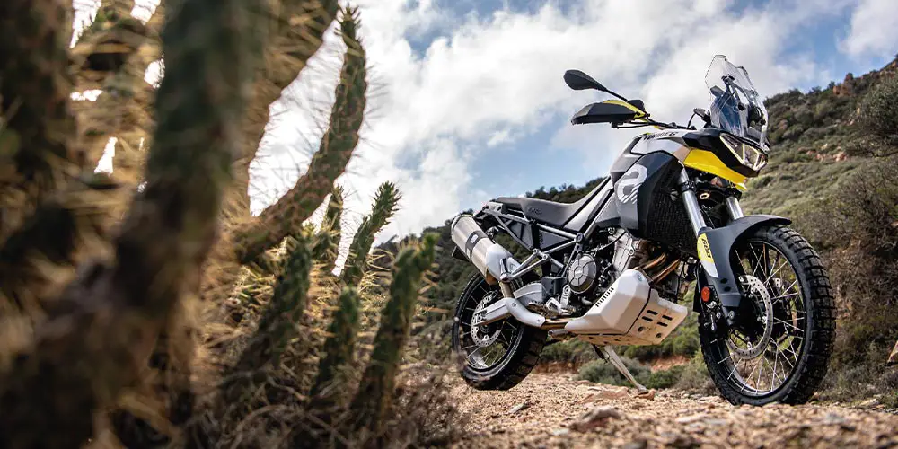
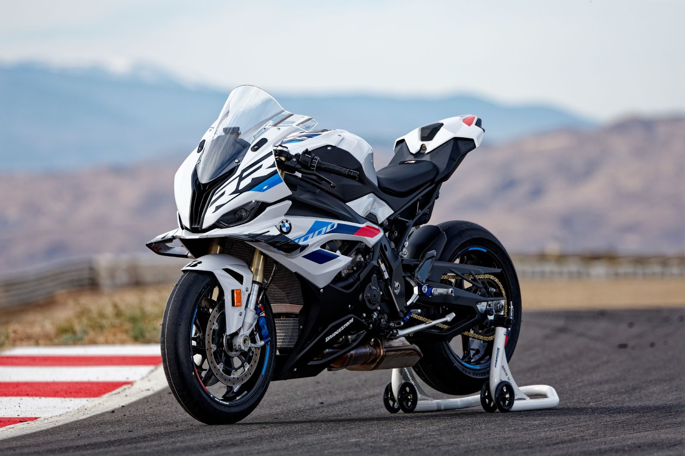
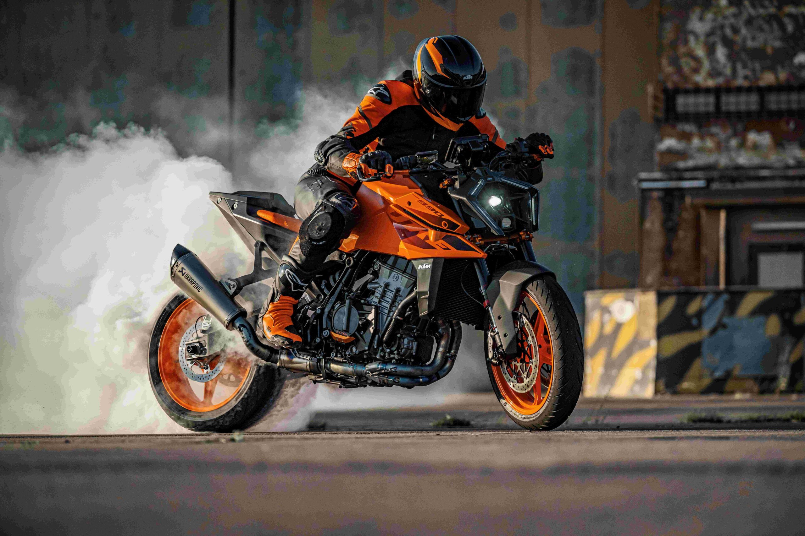
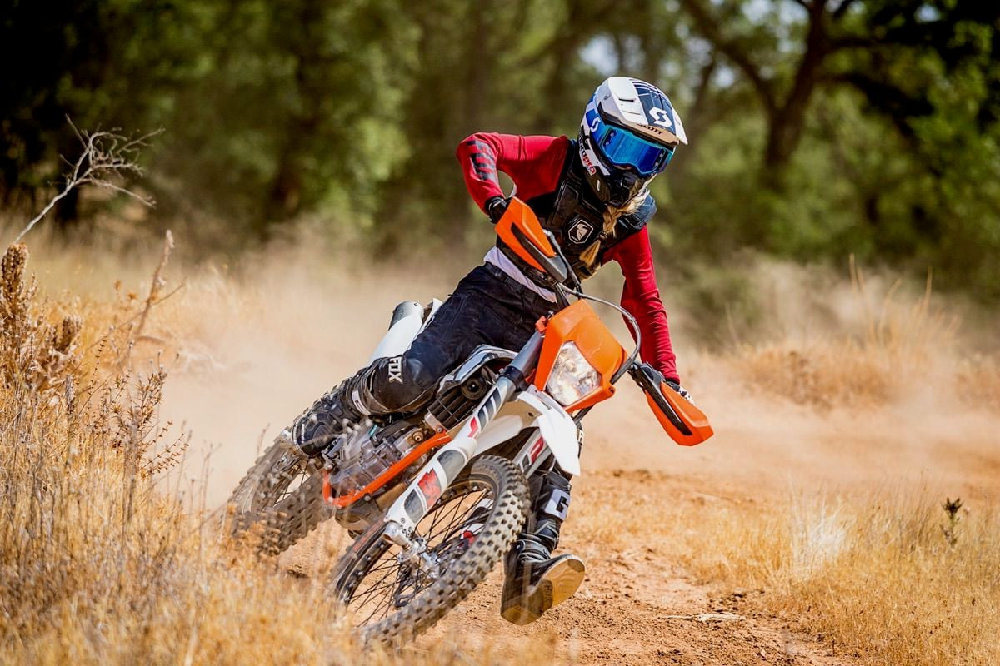

Tipos de motos
Off Road - Doble proposito
Pensadas para tierra, ripio y terrenos difíciles, ligeras con suspensiones de gran recorrido, neumáticos con tacos para mejor tracción, más cómodas que las deportivas puras, con buena autonomía, motores versátiles que equilibran potencia y durabilidad, preparadas tanto para asfalto como para caminos de tierra, equipadas con lo necesario para circular en vía pública. Aventuras aseguradas.

Ver motos
Deportivas - Pista
Diseñadas para alta velocidad en asfalto, con carenado aerodinámico, posición de manejo inclinada hacia adelante, motores potentes de altas revoluciones, suspensiones y frenos de gran rendimiento, chasis rígido y ligero para máxima estabilidad, neumáticos anchos para mayor agarre en curvas, menos pensadas para la comodidad y más para la performance.

Ver motos
Naked - NSport
Sed ut perspiciatis unde omnis iste natus error sit voluptatem accusantium doloremque laudantium, totam rem aperiam, eaque ipsa quae ab illo inventore veritatis et quasi architecto beatae vitae dicta sunt explicabo.

ver motos
Cross - Enduro
Ligeras y resistentes, diseñadas para saltos y terrenos accidentados, suspensiones de gran recorrido, neumáticos con tacos profundos para máxima tracción en tierra y barro, motores potentes de rápida respuesta, chasis reforzado y sin accesorios de confort ni elementos innecesarios.

ver motos